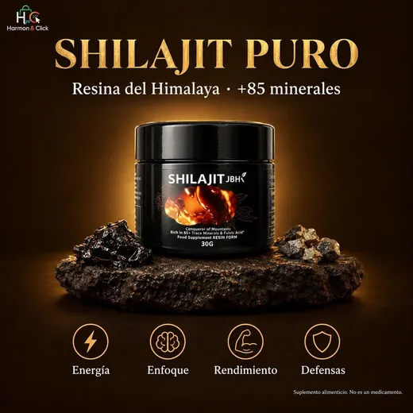

Shilajit Puro JBHK — Resina del Himalaya
Resina pura de Shilajit del Himalaya, con más de 85 minerales traza y ácido fúlvico. Un ritual sencillo para acompañar tu energía y tu vitalidad de todos los días.

Beneficios del Shilajit
El Shilajit es para mujeres y hombres. Sus principales beneficios son:
- Energía y vitalidad diaria: apoya tu energía y tu vitalidad durante el día.
- Claridad mental y concentración: apoya tu enfoque y concentración cuando más lo necesitas.
- Bienestar íntimo: respaldo natural para el bienestar íntimo de mujeres y hombres.
- Vitalidad masculina: contribuye de forma natural al bienestar y la vitalidad del hombre.
- Aliado del bienestar reproductivo: aliado natural para el bienestar reproductivo.
- Rendimiento físico: apoya tu rendimiento, como complemento de tu rutina de ejercicio.
- Sistema inmunológico: contribuye a fortalecer el sistema inmunológico y a combatir la fatiga gracias a su alto contenido de ácido fúlvico y antioxidantes.
- Más de 85 minerales traza: hierro, calcio, magnesio y ácido fúlvico en una resina 100% natural.
Suplemento alimenticio. Este producto no es un medicamento. El consumo de este producto es responsabilidad de quien lo recomienda y de quien lo usa.
¿Cómo preparar el Shilajit?
- Toma una porción de resina con el palito de bambú incluido.
- Disuélvela en un vaso de agua tibia o leche tibia (no hirviendo). También puedes usar té o tu bebida favorita.
- Revuelve unos segundos hasta que se disuelva.
- Bébelo de 4 a 6 días por semana.
Composición
Frasco de 30 g de resina pura de Shilajit purificada (no son cápsulas). 120 porciones por frasco. Incluye más de 85 minerales traza y ácido fúlvico. 100% natural, sin aditivos ni rellenos, sin gluten, apto para veganos.
Precio del Shilajit en México
Desde $449 MXN con envío gratis y pago contra entrega (pagas en efectivo al recibir). 100% original y sellado.
Envío gratis a todo México · Entrega en 3 a 7 días hábiles · Pago contra entrega.